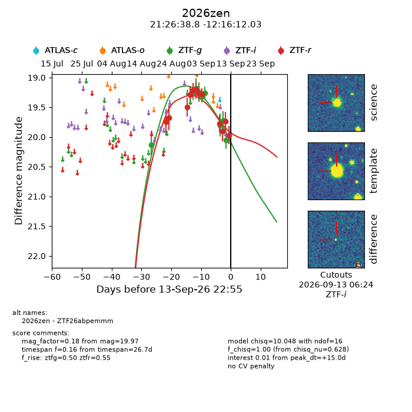
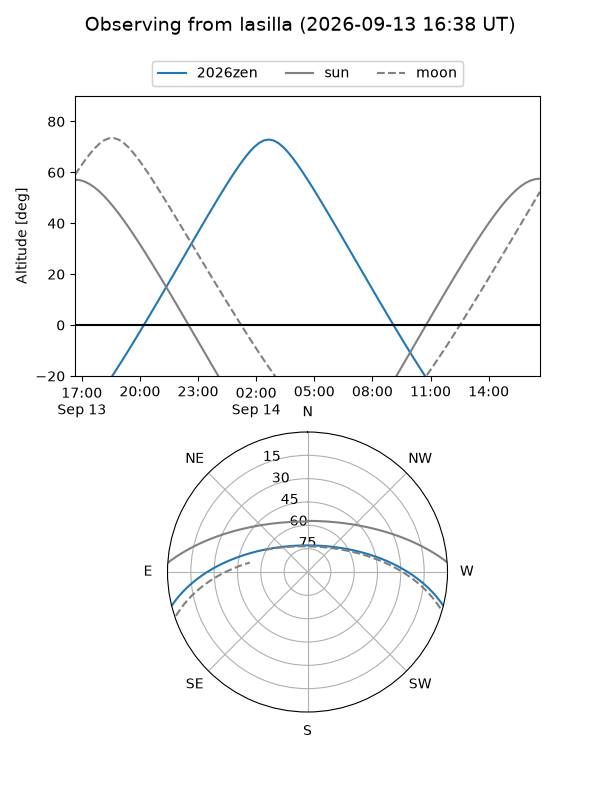
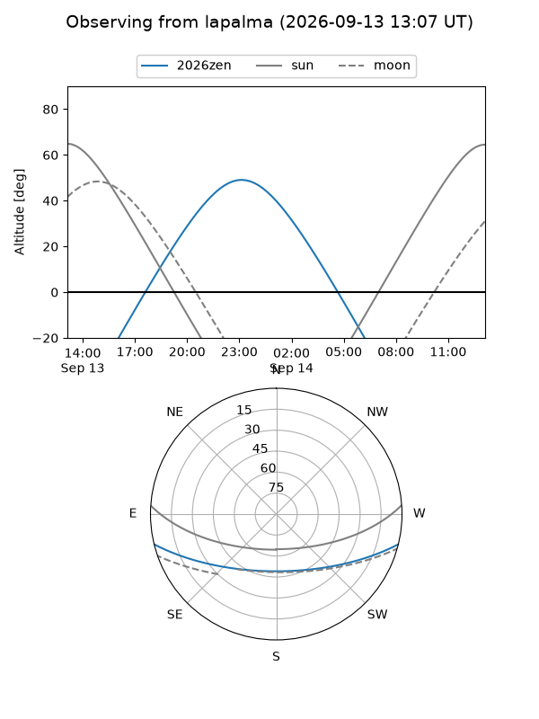
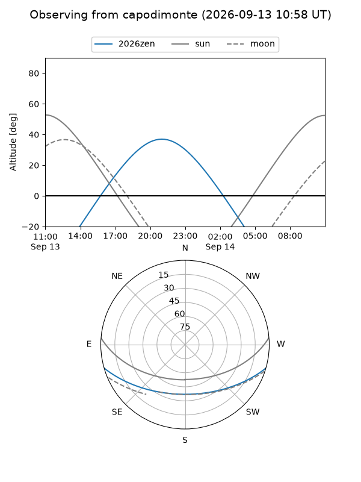
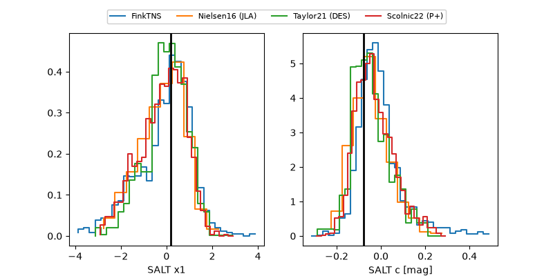

2026zen
Target 2026zen at 2026-09-13 22:57
Aliases and brokers:
FINK-ZTF: ztf.fink-portal.org/ZTF26abpemmm
Lasair-ZTF: lasair-ztf.lsst.ac.uk/objects/ZTF26abpemmm
ALeRCE-ZTF: alerce.online/object/ZTF26abpemmm
YSE-PZ: ziggy.ucolick.org/yse/transient_detail/2026zen
TNS name: wis-tns.org/object/2026zen
Direct TNS query: direct search
alt names
ZTF26abpemmm (ztf,fink_ztf)
2026zen (tns,yse)
Coordinates:
equatorial (ra, dec) = 321.6618,-12.27001
equatorial (HMS+DMS) = 21:26:38.82,-12:16:12.03
galactic (l, b) = (39.6773,-39.93090)
Flags:
TNS type: nan
peak dt: +15.0
Photometry:
last ztfg=20.05, ztfr=19.97
9 ztfg, 12 ztfr detections
Lightcurve

Visibility



Additional plots
